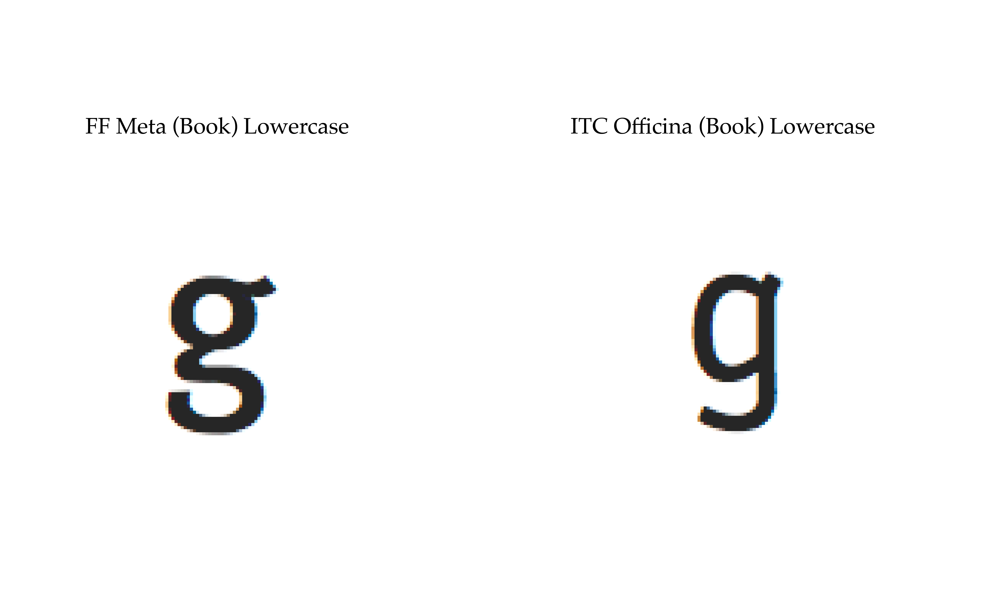

History
Meta
FF Meta is a sans serif, humanist-style typeface designed by German typographists Erik Spiekermann and Oded Ezer in 1985 and later commercially released in 1991. Working with the high-end design company Sedley Place in Berlin, Germany, Spiekermann originally created FF Meta for the West German Post Office (Deustche Bundespost). Rebranding a corporation dependent on small print sizes posed very specific requirements. The West German Post Office was also wary of using another Helvetica-esque font and requested to distinguish the font from the increasingly popular typeface. In order to accommodate for both legibility and readability in small print, FF Meta features slight variation in stroke width and partially curved lines.
Despite this initiative, the West German Post Office eventually decided to not implement FF Meta into their branding and deemed it unusable. This ultimately led to the birth of Spiekermann’s FSI Fontshop International, including a foundry known as FontFont. FF Meta was the first of many fonts designed and released from Spiekermann through this foundry.
Today, FF Meta family boasts over 60 typefaces and is found across countless products and signage around the world.
Officina
ITC Officina was designed by Erik Spiekermann and Ole Schäfer in the early 1980s and released in 1990. It was born in Germany. Originally created as a typeface family that could stand up to “office correspondence and business documentation” on low-resolution laser printers, ITC Officina has grown to be one of the most robust Superfamilies. Extremely strong in its legibility and functionality, Spiekermann gradually developed ITC Officina to host twenty varieties of both sans and sans serif type. ITC Officina shines in condensed spaces, both fine and larger print, because it maintains a balance of tightness with established serifs and counters.
Comparison
Uppercase
FF Meta has a wider width than ITC Officina. The terminals on ITC Officina appear rounder than the terminals of FF Meta than meet the baseline.
ITC Officina includes arms on the uppercase “I” while FF Meta does not.
ITC Officina includes an arm across the top of the uppercase “J” to the left while FF Meta does not. ITC Officina also includes more of a bowl, whereas FF Meta only has a slight curve.
ITC Officina has slanted and slightly rounded terminals whereas FF Meta’s terminals angle slightly to the left and the baseline or capline.
The uppercase “M” in FF Meta has an apex that reaches down to the baseline, whereas ITC Officina does not.
Lowercase
ITC Officina has slanted and slightly rounded terminals whereas FF Meta’s terminals are 90 degree angles with majority facing to the baseline or capline.

FF Meta and ITC Officina have two completely different styles for the lowercase letter “g”. FF Meta has a not fully closed bottom loop in binocular “g” with a circular counter and short x-height. For ITC Officina, the counter is more elliptical than circular and the descender does not go as high up to the baseline as FF Meta.
ITC Officina includes an arm from the stem of the lowercase “i” while FF Meta does not. The terminal at the end of this arm is a 90 degree angle whereas the terminal for FF Meta is a slight angle towards the round dot.

ITC Officina includes an arm from the stem of the lowercase “j” while FF Meta does not. The terminal at the end of this arm is a 90 degree angle whereas the terminal for FF Meta is a slight angle towards the round dot. This is very similar to the letter “i” for each respective font. The bowl for ITC Officina is much larger and rounder than the small terminal for FF Meta.
FF Meta and ITC Officina have slight differences at the top of the stem for the letter “y“. FF Meta’s main stem has an oblique terminal with a 90 degree angle, and the arm of the “y” has a slight angle that does not match. For ITC Officina, both terminals face outward at an angle. The descenders are very different; FF Meta has a short descender with an oblique terminal where as ITC Officina has a longer descender that creates more of a bowl shape.
Punctuation
ITC Officina and FF Meta both have oblique terminals in their punctuation. The difference is that ITC Officina’s make right angles as they meet the line, but FF Meta features some angled terminals (notably on the exclamation point). FF Meta’s stems remain the same width, but ITC Officina’s stems go from wide to thin throughout the glyph. The parentheses for ITC Officina have a gradual curve, but FF Meta does not.
FF Meta has olique terminals that meet the baseline, whereas ITC Officina is angled. This is very apparent in the ampersand. The FF Meta ampersand has a wider width and appears more horizontally stretched than the ITC Officina which looks proportionate. This can be seen in the smaller counters in FF meta and the smaller space between the terminal and the upper counter. ITC has larger counters and more space between the terminal and upper counter. FF Meta has rounder features which can be seen in the “0” of the percentage sign.
Numeral
FF Meta has proportional old style figures whereas ITC Officina has lining figures. The numbers for FF Meta do not reach the baseline, they vary. This causes some numbers to be smaller than others (ex. 0 vs 3). ITC Officina has approximately the same height and baseline for every number.
The number “2” FF Meta’s spine meets the baseline at a hard angle where as for ITC Officina, the spine has much more curve and meets the baseline almost vertically. FF Meta’s number “3” has varying terminals, the bottom terminal is sheared. The terminals for ITC Officina “3” are all oblique and angle inward.
The differences in the terminals and counters are especially noticeable in the numbers, The terminals for FF Meta are slanted angles heading towards the line. ITC Officina terminals are 90 degree angles. The counters for FF Meta are very round, whereas for ITC Officina the counters are not as circular but are stretched vertically.
Analysis
FF Meta and ITC Officina appear to be very similar typefaces, however after careful examination, there are slight differences that make each stand out. FF Meta is characterized by slight variation in stroke width, angled stroke ends, partially curved lines, and striking glyphs. Notably, the two-story “g” has become a recognizable glyph, and uppercase “A” which has a horizontal element with drops slightly on the right side. ITC Officina is characterized by right angles as the arms meet the vertical line, oval counters, defined curved bowls, and terminals with 90 degree angles that angle inward or outward rather than towards the line.